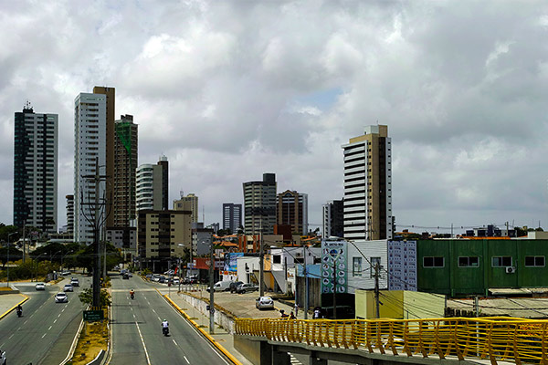
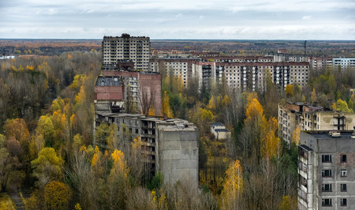

Comieza la aventura
Bedu Tavels es el sitio donde podras encontrar los mejores destinos y experiencias
Tomate un minto para ti
Ciudad de México, anteriormente denominada como Distrito Federal, nota 1 es una de las 32 entidades federativas de México,202122 así como la capital de los Estados Unidos Mexicanos.23 Se localiza en el Valle de México, a una altitud media de 2240 m s. n. m. Tiene una superficie de 1495 km², y se divide administrativamente en 16 demarcaciones. Su población es de 8,9 millones de habitantes, aproximadamente. Sin embargo, cuando se considera también la Zona Metropolitana del Valle de México,24 suma entonces una población total de más de 22 millones de habitantes, lo que la coloca en el noveno puesto de las aglomeraciones urbanas más grandes y más pobladas del mundo, y con ello la más grande del continente americano y del mundo hispanohablante.
Guadalajara mexicana, capital y urbe más poblada del estado de Jalisco. Se localiza en el occidente de México, al centro de Jalisco, en la zona geográfica conocida como Valle de Atemajac. Forma parte de la macrorregión industrial de El Bajío, específicamente en el Bajío Occidente o Centro Occidente (México).6789101112 Es la segunda metrópolis más poblada del país con 5,125,000 al último censo del 2010 13, forma parte de la zona metropolitana de Guadalajara, junto con otros ocho municipios, considerada la segunda área urbana más poblada en México y la octava en América Latina. Su territorio limita al norte con Ixtlahuacán del Río, al oriente con Tonalá y Zapotlanejo, al sur con San Pedro Tlaquepaque y al occidente con Zapopan.
Monterrey es una ciudad mexicana, la capital y ciudad más poblada del estado de Nuevo León, se encuentra en el noreste de México, en la Sierra Madre Oriental. Monterrey es parte del Área Metropolitana de Monterrey, cuya población es de 4,1 millones de habitantes al último censo oficial del 2010, siendo la tercera área metropolitana más poblada de México, después de la Ciudad de México y Guadalajara, y la segunda en extensión territorial con 958 km². Monterrey se localiza a 913 km de la capital del país, la Ciudad de México.
Oaxaca oficialmente el Estado Libre y Soberano de Oaxaca es uno de los treinta y un estados que, junto con la Ciudad de México, forman los Estados Unidos Mexicanos. Su capital y ciudad más poblada es Oaxaca de Juárez. Está dividido en 570 municipios, 418 de los cuales se gobiernan bajo el sistema de usos y costumbres, con formas locales reconocidas de autogobierno.6